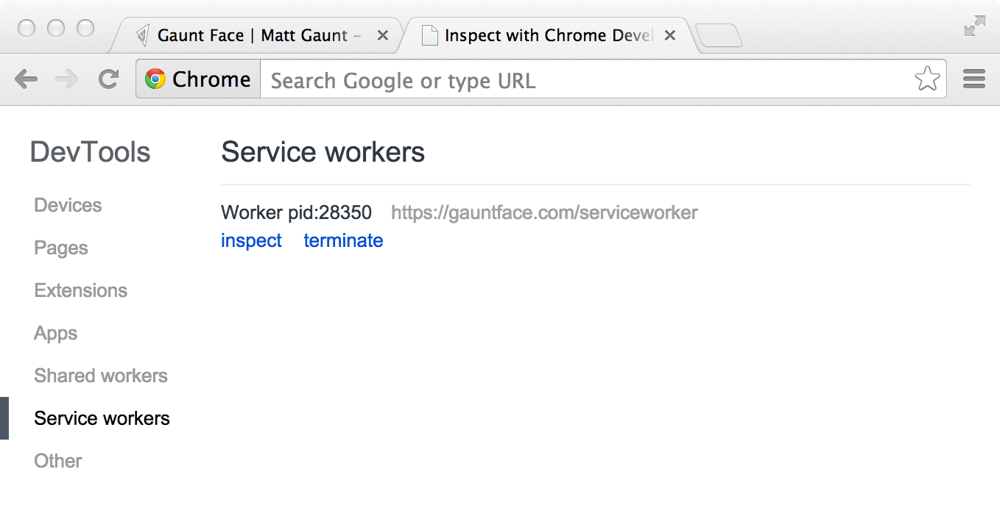
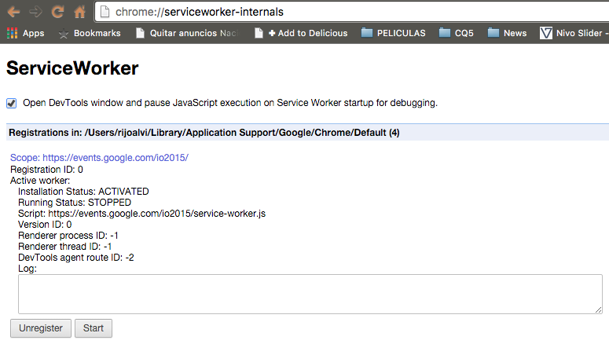

Google Service Workers
A basic overview
Based on the article published by Matt Gaunt
Compiled by Ricardo Alvarado / @rijoalvi
Agenda
- What is a Service Worker?
- Service Worker Lifecycle
- Requirements
- Getting Started
- Updating a Service Worker
- Fails, Wins & Tricks
- Example
What is a Service Worker?
It is a script that is run by your browser in the background, separate from a web page, opening the door to features which don't need a web page or user interaction.
The core feature from this utility is the ability to intercept and handle network requests, including programmatically managing a cache of responses.
It also includes features like push notifications and in the future it will include other things like background sync or geofencing.
What is a Service Worker? (cont.)
Important things about a service worker:
- It's a JavaScript Worker, so it can't access the DOM directly. Instead, a service worker can communicate with the pages it controls by responding to messages sent via the postMessage interface.
- It's a programmable network proxy, which allows you to control how network requests from your page are handled./li>
- It will be terminated when not in use, and restarted when it's next needed, so you cannot rely on global state within a service worker's onfetch and onmessage handlers. If you need to persist information, service workers do have access to the IndexedDB API.
- Service workers make extensive use of promises
Service Worker Lifecycle

The service worker lifecycle is completely separate from your webpage.
Tipically, the lifecycle includesthe following steps:
- Register the service worker on the site (this will cause the browser to install the SW)
- Install step. If this succeeds, the SW becomes active, otherwise, it won't activate
- Activation step. If this succeeds, the SW gets control of the requests from all the pages under its scope
- Handling Fetch and message requests or
- Terminate the Service Worker
Requirements when using service workers
- HTTPS is Needed. We're working with stuff that can hijack connections, fabricate, and filter responses. We need to be sure that these powers are used only for good.
- Service Workers work locally without https so, for development purposes there's no problem
- If you don't want to a certificate and you need to try this on the web, keep in mind that sites like github server their content over https :)
- We need to grab a polyfill from this repository https://github.com/coonsta/cache-polyfill. This will add support for Cache.addAll
Getting Started
Registering a Service Worker
By starting the register process, we basically tell the browser where the service worker JavaScript file lives.
if ('serviceWorker' in navigator) {
navigator.serviceWorker.register('/sw.js').then(function(registration) {
// Registration was successful
console.log('ServiceWorker registration successful with scope: ', registration.scope);
}).catch(function(err) {
// registration failed :(
console.log('ServiceWorker registration failed: ', err);
});
}
- You can call register every time a page. The browser will figure out if the service worker is already registered or not and handle it accordingly.
- The service worker scope is 100% related to the location of the service worker js file. If this file is located at the root of the domain, it scope will be the entire domain but, for example, if the file is at /example/sw.js , the scope would be only the requests starting with /example/
Checking if a Service Worker is enabled
You can check that a service worker is enabled by going to chrome://inspect/service-workers#service-workers and looking for your site. (copy and paste the url since chrome doesn't allow internal links)
Service Worker Install Step
You can handle the install event, which is fired after a controlled page kicks off the registration process
For the most basic example, you need to define a callback for the install event and decide which files you want to cache.
Inside of your install callback, you need to take the following steps:
- Open a cache
- Cache your files
- Confirm whether all the required assets are cached or not
var CACHE_NAME = 'my-site-cache-v1';
var urlsToCache = [
'/',
'/styles/main.css',
'/script/main.js'
];
self.addEventListener('install', function(event) {
// Perform install steps
event.waitUntil(
caches.open(CACHE_NAME)
.then(function(cache) {
console.log('Opened cache');
return cache.addAll(urlsToCache);
})
);
});
How to Cache and Return Requests
After a service worker is installed and the user navigates to a different page or refreshes, the service worker will begin to receive fetch events
Since we want to cache new requests cumulatively, we can do so by handling the response of the fetch request and then adding it to the cache, like below:
self.addEventListener('fetch', function(event) {
event.respondWith(
caches.match(event.request)
.then(function(response) {
// Cache hit - return response
if (response) {
return response;
}
// IMPORTANT: Clone the request. A request is a stream and can only be consumed once.
// Since we are consuming this once by cache and once by the browser for fetch, we
// need to clone the response
var fetchRequest = event.request.clone();
return fetch(fetchRequest).then(
function(response) {
// Check if we received a valid response
if(!response || response.status !== 200 || response.type !== 'basic') {
return response;
}
// IMPORTANT: Clone the response. A response is a stream and because we want the
// browser to consume the response as well as the cache consuming the response,
// we need to clone it so we have 2 streams.
var responseToCache = response.clone();
caches.open(CACHE_NAME)
.then(function(cache) {
cache.put(event.request, responseToCache);
});
return response;
}
);
})
);
});
How to Update a Service Worker
There will be a point in time where your service worker will need updating. When that time comes, you'll need to follow these steps:
- Update your service worker JavaScript file: When the user navigates to your site, the browser tries to redownload the script file that defined the service worker in the background. If there is even a byte's difference in the service worker file compared to what it currently has, it considers it 'new'.
- Your new service worker will be started and the install event will be fired.
- At this point the old service worker is still controlling the current pages so the new service worker will enter a "waiting" state.
- When the currently open pages of your site are closed, the old service worker will be killed and the new service worker will take control.
- Once your new service worker takes control, its activate event will be fired.
Whitelisting caches
Let's say we have one cache called 'my-site-cache-v1', and we find that we want to split this out into one cache for pages and one cache for blog posts. This means in the install step we'd create two caches, 'pages-cache-v1' and 'blog-posts-cache-v1' and in the activate step we'd want to delete our older 'my-site-cache-v1'.
self.addEventListener('activate', function(event) {
var cacheWhitelist = ['pages-cache-v1', 'blog-posts-cache-v1'];
event.waitUntil(
caches.keys().then(function(cacheNames) {
return Promise.all(
cacheNames.map(function(cacheName) {
if (cacheWhitelist.indexOf(cacheName) === -1) {
return caches.delete(cacheName);
}
})
);
})
);
});
Common Problems
If Installation Fails, Sometimes it's hard to notice
If a worker registers, but then doesn't appear in the chrome service workers page (chrome://inspect/service-workers#service-workers), probably it failed to install due to an error being thrown, or a rejected promise being passed to event.waitUntil
To work around this, go to chrome://serviceworker-internals and check "Opens the DevTools window for service worker on start for debugging", and put a debugger; statement at the start of your install event. This, along with " Pause on uncaught exceptions", should reveal the issue.
No Credentials by Default on fetch()
When you use fetch, by default, requests won't contain credentials such as cookies. If you want credentials, instead call:
fetch(url, {
credentials: 'include'
})
Non-CORS Fail by Default
By default, fetching a resource from a third party URL will fail if it doesn't support CORS. You can add a non-CORS option to the Request to overcome this, although this will cause that you won't be able to tell if the response was successful or not.
cache.addAll(urlsToPrefetch.map(function(urlToPrefetch) {
return new Request(urlToPrefetch, { mode: 'no-cors' });
})).then(function() {
console.log('All resources have been fetched and cached.');
});
Live Demo
Questions?
Interesting Material On Service Workers
- https://jakearchibald.github.io/isserviceworkerready/
- http://www.w3.org/TR/service-workers/
- https://developer.mozilla.org/en-US/docs/Web/API/Service_Worker_API/Using_Service_Workers
- http://blog.lamplightdev.com/2015/01/06/A-Simple-ServiceWorker-App/
- http://www.html5rocks.com/en/tutorials/service-worker/introduction/